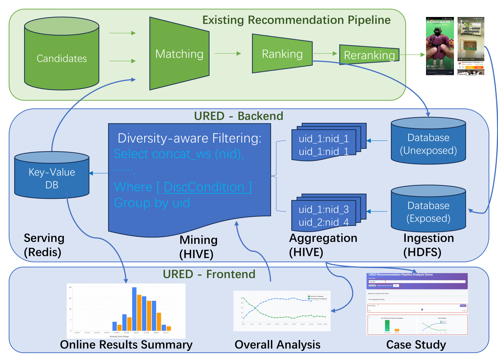
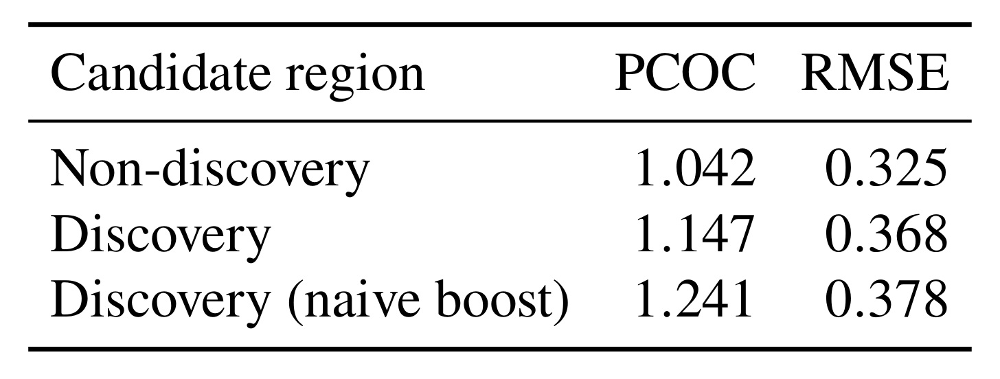
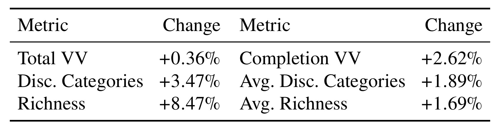
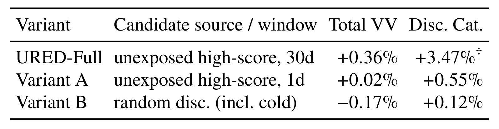
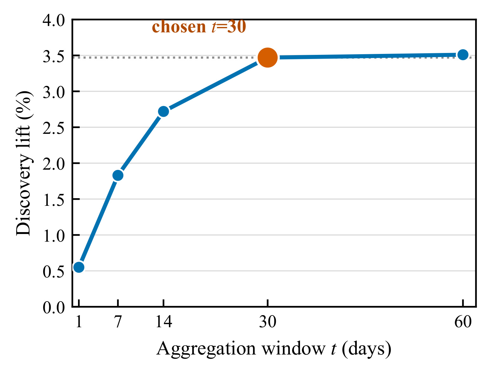
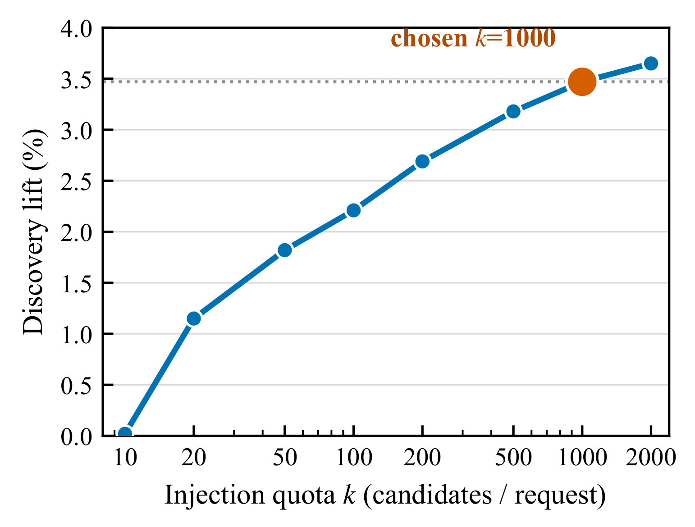
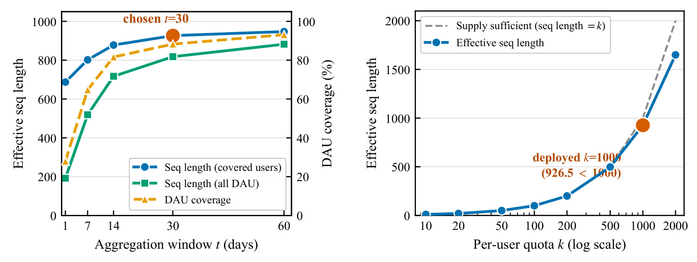
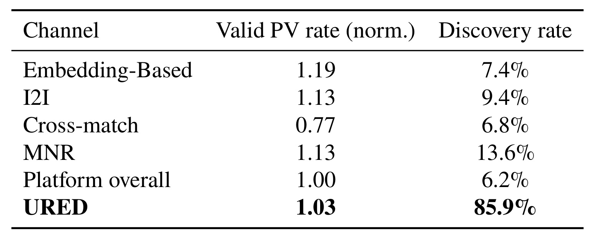
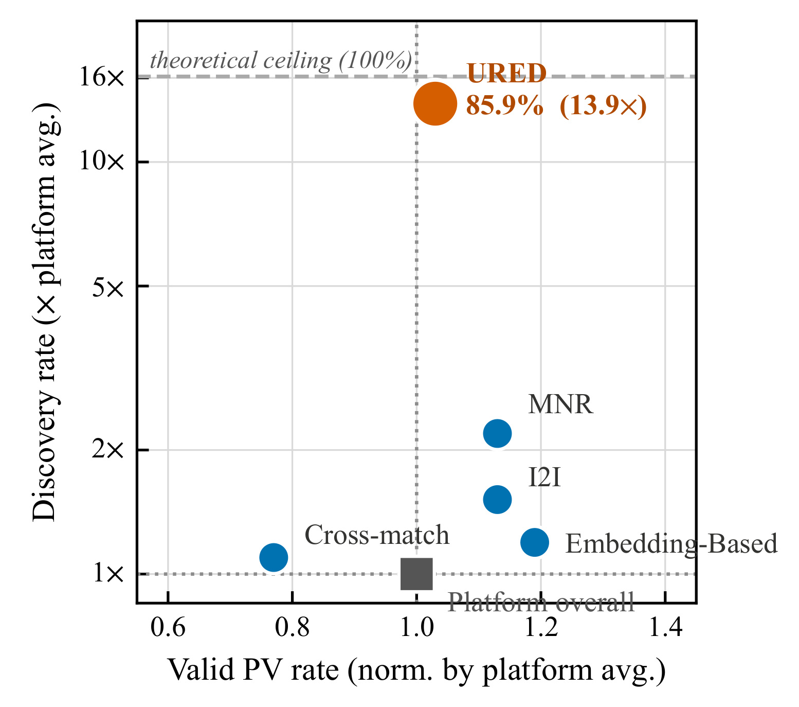
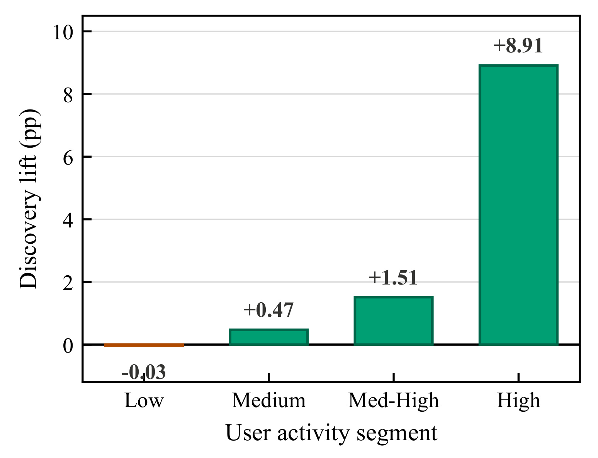

From Waste to Discovery / 淘宝信息流高分未曝光候选回收
- 作者为 Ge Fan、Kai Meng、Huiping Chu、Yuning Jiang、Han Zhu、Bo Zheng，署名机构为阿里巴巴淘宝天猫集团。
- 来源为 arXiv 预印本。首版提交于 2026 年 11 月 4 日 05:45:30 UTC，北京时间同日 13:45:30。按 v1 原文读取。未核验到独立作者代码仓库。 论文原文
淘宝信息流的排序器每次要评估数百个候选，最终只有少数能被看到。URED 把高分但未展示的候选当成下一轮可能有用的召回来源。它需要先区分排序器确实识别过的候选和从未有过用户信号的冷候选，再按用户和时间整理供给，最后让新增候选重走线上排序链路。
给用户较少见的类别直接增加曝光，容易引入信息不足的冷候选。排序模型会高估这些内容的参与概率，线上既难见到显著的发现收益，又可能损失观看表现。如何为探索找到有用户相关性、且排序器能较可靠评估的候选，是本文要解决的问题。
1. 背景和问题
1.1 探索先遇到候选质量问题
信息流的常规处理分为匹配、排序和重排。匹配用计算便宜的方法把大库存缩成一批可能相关的候选；排序用较多用户与物品特征预测观看等行为；重排再综合页面槽位、去重、业务规则和多样性，选出实际展示项。每个阶段都缩小集合。用户最终没有看到某个内容，可能是这个内容根本没进入匹配，也可能是进入排序后分数偏低，还可能是在当前请求中已有更强的候选、相似内容已被占位，或列表级规则限制了曝光。后三种情况的观察价值不同。一个未被模型评估的用户物品对既无当前分数也无曝光结果，一个已经评过高分的用户物品对至少留下了现有系统对这次匹配的判断。论文要保留的是第二种数据中曾经给过高分、最终没有展示的一部分。
工业信息流的观看样本主要来自已经展示的内容。模型学习的是在现有召回和流量选择机制之下容易积累标签的样本。对于用户长期看过的主题，点击、停留、完播、关注或者商品互动往往能提供多路证据。对于用户很少见过的类别，训练中这类用户与物品的组合更少，预测就更可能借用物品或类别在人群中的平均模式。全站某一类内容热门，不代表当前用户也有同等兴趣。给发现项提权可能优先放大这种偏差，因为入选条件本身依赖那个容易失真的分数。即使扩大品类曝光的方向合理，只要被选进来的项质量不足，用户可能迅速划走，追加曝光也未必带来持续的兴趣发现。
论文从两处观察这个问题。其一是按候选区域查看预测点击总量相对实际点击总量的校准偏差。其二是查看预测与标签的均方根误差。前一个量上升，说明该批内容的整体分数更乐观；后一个量上升，说明分数离实际结果更远。均方根误差是预测误差度量，不能直接读作任意两项相对次序的正确率。文中把冷候选内部排序可能较不可靠作为机制解释。它同时引出一个证据缺口：真正从未展示的某个用户物品对没有当次观看标签，历史生产日志上的分组表不能直接证明所有未曝光高分项都已校准，也不能估计它们被展示时的个体反事实结果。URED 用新增召回通道做用户级线上实验，验证的是回注这一处理策略的总体效果。
1.2 物品未见与类别未见各自控制什么
作者把发现定义在类别层。某个类别在过去指定天数未向用户曝光，才可能成为这一用户的发现类别。这里的曝光是系统是否实际展示，不需要用户先看完或表达偏好。短期观察到新类目可能只是展示结构发生变化，是否形成持续兴趣还需要更长周期的结果来判断。例如，某用户最近看过美妆视频，某条新的美妆视频仍可能从未在该用户的列表出现，但按类目定义它不属于发现。另一个用户过去十五天从未看到该类目，同一条视频可以构成发现候选。类别定义由平台标签体系与曝光日志共同确定，不能直接解释成内容语义上很陌生，更不能等价成对全平台的新物品。
物品级未曝光则服务于另一层约束。线上常有曝光去重，重复显示旧物品会挤压页面空间；作者因此只考虑已得分但未展示的项。历史上在会话甲中未曝光，并不能保证会话乙中仍未曝光。因此分析时要区分采集当时的未展示标记、按日刷新时的近期类目集合和当次请求中最终的去重状态。类目只需一次其他候选的曝光就能从发现类别变成已见类别，哪怕这条缓存物品仍从未出现。这也是离线筛好的列表到了线上会混入非发现项的一种直接机制。论文没有公开完整去重存储、所有状态刷新时点及回退分支，系统流程和实现细节应分别记录。
高分历史候选也仍然处在现有召回能力的边界内。一个冷创作者如果从未进入该用户的原召回集合，URED 没有材料可以回收；一个类目即使被召回过，如果已有模型低估其所有候选，也会在高分截断中被过滤。它增加的是既有模型曾经识别、却因曝光资源有限没有呈现的探索机会。这个范围比全库存随机探索窄，却能减小对即时互动质量的压力。相应地，冷用户和低活跃用户原本就产生较少排序会话，其高分未展示供给更薄。这一结论可以在后面的分段线上结果里观察，但无法由用户活跃度本身推出他是否愿意尝试新兴趣。
1.3 候选积累与线上预算为何需要联动
如果一条请求只有少量满足双重条件的候选，再提高注入数量也只能触及一个很浅的池。多天积累扩大了被采样的情境：用户可能在某天刷了更多视频，也可能只是被另一个主题占掉当时位置；随着请求增加，模型曾认可但未呈现的候选逐渐沉淀。作者把历史窗口和一次请求的注入配额当成两个不同控制项。窗口决定供给覆盖哪些用户、积累多久；配额决定当前请求能带回多少条，以及下游排序承担多大的合并和计算压力。再加上发现判定的类目曝光窗，线上实际有三套尺度。把三者混成单一的兴趣衰减周期，可能导致池化窗口和新颖性口径一起变动，无法分辨增益来自候选更多还是定义更宽松。
与重新检索、改多目标权重、为冷候选建专门模型相比，论文选择保留现有模型，把干预放到候选数据生命周期。这使效果更容易和主模型更新分开，也让复现实验需要接触通常不长期保留的数据：通过排序且未曝光的候选，以及能和它对齐的实际曝光、类目和时间信息。对于任何打算借用该方法的系统，应先查候选事件是否拥有可靠的展示结果关联。若把召回后未进入粗排的记录当成有精排分数的未曝光样本，池里的分数口径会混掉。若用点击日志代替曝光日志，用户看过但没互动的类别会被误记为发现。工程上先解决事件定义，后面才有可比的线下校准、覆盖与线上发现指标。
2. 方法
2.1 高分未曝光采集
作者先在给定用户的发现候选里定义高分且未曝光的集合，以预测分数达到阈值作为概念划分。原文这一表达服务于解释候选边界。每个会话先保留已排序未展示的高分项，跨日积累后再依据用户近期曝光类目过滤。两者分别描述研究对象与工程路径。
符号解释：$u$ 为用户，$i$ 为物品，$\widehat y(u,i)$ 为现有排序器预测的参与概率，$\tau$ 为概念阈值，$\mathcal D$ 为按该用户近期类目曝光确定的发现集合。$\mathcal D_{\mathrm{other}}$ 包括从未为该用户评分的冷项和低分的发现项。高预测分在这个集合中承担候选筛选作用，原文未报告一条适用于各分段的概率标定阈值。不同线上目标若共用池，要保证排序分的语义和版本可追溯。

图上方的绿色部分从候选库进入匹配，再到排序和重排，随后少量内容进入用户实际看到的页面。两路记录在展示决策前后产生：右侧上方的数据库放已经评过分却没有呈现的样本，右侧下方的库放实际曝光。两类事件进入同一离线数据链，但用在不同位置。按用户聚合时，上路为后续回注提供候选和历史分数，下路提供最近哪些类别已经展示过的约束。中央 Hive 挖掘模块按用户筛选，再把物品列表交给左侧键值存储。蓝色曲线回到绿色匹配入口，表示缓存给现有召回池提供来源，重排前仍然要经过正式排名和业务规则。把箭头误读成从历史分数直接到曝光，就会误把供给池的发现浓度当成最终曝光浓度。图底部三个界面分别示意线上结果汇总、整体曲线分析和按例检查，作者用来查看每个用户的曝光轨迹并试算过滤阈值。它们是运维和诊断入口，未提供新的在线训练反馈。图中存储与计算组件列的是实现实例，核心依赖是异步收集、按用户批处理、低延迟取列表三件事。绿色页面端的展示流一旦写错，例如把排进返回列表却未真实渲染的物品都记为曝光，蓝色挖掘会误删这一批类别。相反，漏写展示会让已见类目进入候选池。这两个方向的错误都可能只改变发现率而不显著改变召回耗时，排查时须把在线链路的查表告警与离线两路事件质量分开，不能用 Redis 命中率替代数据正确性。路径整体让昂贵的排序推断仍发生在原服务，只把数据写入和长窗合并移到在线请求之外。
每次排序后，从已评分但未展示的候选里留下按分排序前二百条。与直接保存全部已评分候选相比，此举减少网络、落盘和后续去重负担，也主动筛掉了预测分偏低的尾部。每条记录带有类目、时间戳与多目标分量，异步写入分布式文件存储，论文给出分钟级落盘延迟。对应的展示日志并行写入。假如上下两路日志的事件时间和落盘时间不同，某些迟到曝光可能被错认为当前未展示，进而进入次日池；因此生产接入时需要能检查同一排序请求两路是否齐全。原文只给了链路和字段类别，没有公开具体事件键、落盘补写和精确的水位规则。
符号解释：$s$ 为一次会话，$S_s(u)$ 为其中已评分候选，$E_s(u)$ 为这次实际展示项，$A_s(u)$ 为本次保存的候选。$\operatorname{TopK}^{\widehat y}$ 表示用当次排序分取前 $k_1$ 条。此式是对原文采集步骤的符号化，区别于它在概念层的固定阈值。若同一次会话来自不同召回通道，记录要保留候选来源与实际评分阶段，才能诊断源头缺供给或排序变化导致的池偏移。保存上限设在会话层，一个用户一天仍可能积累多批。
2.2 时间聚合及已曝光类别挖掘
每日分布式批任务读取滑动窗口内的未展示高分样本，对同一用户和物品去重，按新近程度组织，并将用户级列表限制到一万条。这里的排序依据发生了变化。会话内按分选保留对象，跨天用户级集合以时效组织。历史分来自不同时刻，可能受不同模型版本和流量影响，系统无需假定这些分数可以无条件直接全局比较。按新近顺序可以给近期候选更多进入池的机会，不过原文没有细说同一物品多次出现且类目、得分或分量变化时怎样选择保留记录。该细节会影响分析候选年龄与重回池次数时的归因。
符号解释：$H_t(u)$ 为跨会话池，$t$ 为天数窗口，$\mathrm{age}(s)$ 为相对聚合时点的会话年龄，$\operatorname{Dedup}_{\mathrm{item}}$ 表示在该用户内按物品去重，$k_2$ 是聚合截断。式中严格小于只表示滑动窗口概念，日分区的起止时刻和迟到容忍要服从具体实现。当天采集时如果某个用户没有足够的高分未曝光样本，即使其配额很高，窗口也无法凭空补齐。反过来，频繁使用的用户即便有大量样本，也受去重与一万条上限控制，避免少量超高活用户占用大部分离线资源。
另一侧从展示日志构造每用户近期曝光过的类目集合，用它对用户候选做反连接。每日聚合窗口三十天和发现判定十五天都与时间相关，但前者取历史供给，后者定义发现，两者可以独立改变。文章允许操作人员通过控制台修改类别新颖性阈值，并先模拟对用户覆盖的影响。由于过滤发生在离线表，用户在过滤完成后产生的浏览会让部分条目的类别在实际服务时过期。当前论文确认作者把线上发现浓度低于理论筛选上界的差距归于这类时延，未报告对齐逐用户发布时间的实证归因。
符号解释：$c(i)$ 为物品所属类别，$C^{\mathrm{exp}}_d(u)$ 是用户过去 $d$ 天有过曝光的类别集合，$P_{t,d}(u)$ 是经发现条件留下的回注池。论文全部实验用 $d=15$ 天。若类目标签为多标签，集合比较时用主类还是要求所有标签都没曝光，原文未说明。更换标签体系会改变分子和历史匹配，不宜把旧实验的发现提升直接和新口径连成趋势。对平台来说，若同时监控内容级和类别级曝光去重，最好把它们各自的命中率拆开，才能看出是状态延迟还是重复候选挤占配额。
2.3 在线索引和候选回注
筛完的物品按用户存入在线键值库。请求到达后按用户读一份列表，最多把一千个候选并入统一召回池。它与双塔、协同过滤、跨域匹配等通道共同竞争，继续使用现有精排与重排。命中不意味着本次有一千条，也不意味着所有条目都会进入重排或曝光；任何阶段的有效性过滤、跨通道去重和排序竞争都可能缩小贡献。具体把相同候选归给哪一路没有在文章给出，因而渠道分析须结合平台统计口径解读。
符号解释：$q$ 代表当前请求，$B(u,q)$ 是可回注的候选子集，$k$ 是单请求注入上限。这是对文章数量限制的表达，未把未公开的选取顺序写成原算法。按用户读取键值可视为固定次数访问，作者以 $O(1)$ 描述这一步。返回体积、反序列化、合并和排序开销仍可能随候选数增长。因而单次键查和整个请求代价属于不同层次。文章另给处理组相对对照的端到端附加时延低于百分之一作为测量证据，未给不同分位和每一段耗时的分解。
部署叙述说服务栈无需改变，结合前文应理解为无需替换线上排序模型或重写其服务架构，新增的键值依赖、召回源、离线作业、监控和发布路径仍是实际改动。排序模型不重训，既有在线目标继续控制后续次序。这带来一个控制优势：可以通过关掉新增召回源做回滚，而不用恢复旧模型参数。它也让候选池必须考虑有效期、数据作业失败和服务缺键。论文提到持久化候选池可作为在线数据备份，运营会观察新鲜度、渠道曝光占比和参与质量。分布式备份如何与每日增量原子切换，以及用户删除请求和池数据之间如何同步，公开文本未展开。
3. 实验结果
3.1 生产日志中的预测偏差

表中三行分别为非发现、发现、朴素提权后的发现候选，两列测量预测总量与实际总量的比例和预测误差。PCOC 从 1.042 到 1.147，再到 1.241。将 1.147 除以 1.042，可得相对增幅约百分之十。按比值的绝对偏离读，预测点击总量在两个候选区域分别超出实际总量约百分之四点二和十四点七，不能把两者的差写成点击率少了十个百分点。RMSE 由 0.325 到 0.368，再到 0.378，分别提示按发现与非发现分组时更大的预测误差，以及朴素提权所涉及区域进一步变差。表中的分组有助于把发现候选的评分偏差从整盘平均里显露出来。但它没有提供高分未曝光池单独的校准误差，也没有报告两组预测分的分布、标签可得样本数和对每个候选分区做控制后的效果。排序器对候选类目的真实认识、分数校准和选中后的点击事件是三个不同对象。这张表支持开展新召回源的假设，后面的实验才给出新增召回的处理效应。以同一列 RMSE 描述任意一对候选的相对排序误差仍然过强，因为平方误差会同时随总体偏差、区分力及各分数区间的样本占比变化。若同一批用户发现项更少、曝光位置更靠后，实际点击分母本身会变小，预测与观察的比值也容易变大。作者没有提供位置匹配、类目重采样和同分值分桶的结果，不能把表里的差异全部归给信息贫乏。可先把分数分桶后分别查看各桶曝光、实际点击和用户频率，再观察差异是否集中在高分尾部；这能区分全局偏置、单调校准问题与纯粹的样本构成变化。
符号解释：$j$ 表示给定日志切面的样本，$n$ 为其样本数，$\widehat c_j$ 和 $c_j$ 分别表示预测和实际标签。此处将文中点击总量比及标准均方根误差写开以解释指标，预测量与标签需要在同一量纲聚合；若实际点击总量为零，前一个比例无定义。论文未公开用于误差聚合的原始记录。用于发现问题诊断的是生产日志点击口径，在线报告另使用观看和完播口径。即便模型版本一致，也不能把点击误差值和观看增量当成同一目标的两个读数。
3.2 用户随机分流与总体发现收益
作者报告淘宝信息流规模为数千万日活、日请求数十亿量级，峰值超过一万 QPS，并称系统已服务逾六个月。线上实验按用户随机分组，对照组占百分之十流量，采用基线流程；处理桶占百分之五至十，在相同基线中加入 URED 通道。报告里的每个实验持续一周以上。平台做了全局流量协调，显著性使用结合 CUPED 方差缩减的 Z 检验。CUPED 的目的是利用与结果相关的实验前变量减少估计方差，论文没有给所用协变量、逐臂样本数、标准误、精确检验阈值或多指标检验处理。按用户随机分流，解读单位应与用户分流一致，不应把同一用户的多次观看各自视为独立抽样。流量比例不同也不能把各桶原始总次数直接当成等分母的处理效应，正文仅给了作者所用指标的相对变化。

表的左右两半都是处理相对对照的变化。总体发现类目增长百分之三点四七，每用户平均发现类目增长百分之一点八九；总体丰富度增长百分之八点四七，每用户平均丰富度增长百分之一点六九。丰富度表示曝光内容多样性，两组总体量和对应人均量有不同聚合口径，不能从百分比相减倒推出用户量，也不宜把较大的总体值描述成典型个体的收益。两类发现指标及完播观看量的正向变动在文中均通过检验。完播观看量增长百分之二点六二提供了有效观看增加的证据。总观看量增加百分之零点三六，没有达到显著，既不能报告为已证实上升，也不能作为统计等效或严格不劣的证明。表没有给总观看的置信区间，读者无法判断估计允许多大真实下降。如果上线需要硬门槛，应事先定义可接受的劣化范围，再用同单位和充分样本去验证。表中没有留存、长周期复访或商业指标。文章在产品上用发现增量与完播支持该通道上线，证据停留在作者给出的周期与指标内。这里的完播观看量是次数指标，不能在没有合适分母时改写成完播率相对增长。若曝光量和用户流量在各桶中发生变化，次数与比例的方向甚至可能不同。进一步评审可同时查看有曝光用户、曝光次数与达到完播阈值的观看次数，明确其中一层如何归一；这比用完播量除以另一张表中的有效 PV 指标更合适，因为两张表的样本范围和阈值均不相同。
符号解释：$M$ 代表表中的某项同口径指标，分母是对照桶相应值，分子为处理桶相应值。此式展开原文所说的相对变化。$M$ 若是分段用户的归一化发现比例，则后文 Figure 6 使用直接相减后的百分点而非此比值。原文未给全部绝对基线和聚合细节，无法从这些百分比还原曝光次数或分段显著性。
3.3 窗口、候选质量和配额的对照

表里三种处理均与无 URED 的对照流程相比。Full 保留三十天的高分未展示历史，发现类别提升百分之三点四七。变体 A 保留分数筛选但只用一天，点估计降到百分之零点五五，约为 Full 点估计的百分之十六，未达到显著。应把这解读成短窗下观察到的收益更弱，而不是把百分之八十四当作以精确区间估出来的真实损失。变体 B 随机引入发现候选，包含冷项，发现类目只变化百分之零点一二，总观看为负百分之零点一七，两项均不显著。它测试的是随机发现来源替换历史高分来源的结果，候选构成随之变化，未做“从相同未展示池等量抽样，仅切换是否按分截断”的严格比较。由此可确认作者报告的配置中两种替代没有复制完整方案的显著发现提升；若要量化置信筛选独立贡献，还需要匹配来源、时效和候选数再做对照。表的显著性标记只针对这两个列出来的指标，Table 2 的完播显著不构成表三总观看显著的证据。另一个容易遗漏的区别是，每一行都相对无该通道的对照，而不是在表中逐行互为对照。两行分别通过或没通过检验，不能直接推出它们彼此的差也通过了检验。若要检验替换窗口本身，宜让短窗与长窗构成预先指定的组间比较，并保留实验前方差缩减的相同口径。把同一用户多会话的观看作为独立样本会低估这种比较的不确定性，也可能掩盖活跃度构成变化。

横轴是历史聚合天数，纵轴是发现类别相对提升。曲线从一天的百分之零点五五上升到十四天的百分之二点七二，三十天到百分之三点四七，六十天只有百分之三点五一。后三十天给出的增量是相对提升率口径里的零点零四个百分点，不能读作原始曝光中有百分之零点零四的发现物品。作者使用同一期间并行桶，使季节变化和活动档期更难单独解释趋势。窗口延长会纳入更多历史和更多可能陈旧的候选，图中只给总收益曲线，不带每一点的标准误，因而三十与六十天不能被宣称有统计差异。合理的读法是三十天已达到接近观察到的高收益位置，额外增加时间的收益点估计很小，资源与时效成本可能更重要。该位置依赖使用频率、物品有效期和用户兴趣转移速度，不能仅凭原文数字把三十天部署成其他业务的默认值。冷启动多的应用可能遇到历史一直不足的问题，短时效热点又可能更早失效。

横轴按对数刻度表示单请求最多注入的候选数，纵轴仍是发现类别相对提升。配额十时只有百分之零点零二，到二百为百分之二点六九，到一千为百分之三点四七，再翻到两千也只到百分之三点六五。由于横轴不是等距候选数，不能用图形的视觉斜率直接换算每新增一个候选的收益。比较一千到两千时每请求增加的是候选上限，实际新增入池数可能小于一千。即使都读到，它们还需与原通道合并、过滤与重新排名，新增曝光会少得多。因此曲线反映候选补充到实际曝光整条链的收益，不能当作新增一个候选就新增一次曝光。对高并发场景，适合同时看请求返回条数分布、精排实际增量、旧通道被挤占程度和发现提升，再以尾部时延约束配额。论文把一千作为部署工作点，图上只提供发现目标与配额关系，未给相同横轴下的精排开销、曝光替代量和尾时延指标。

左图同时展示按有效用户的序列长度、按全部日活的序列长度和日活覆盖率，百分比要读右轴。覆盖定义为用户的池非空，一天百分之二十八，三十天百分之八十八点三，六十天百分之九十三点一。有池用户的平均长度从三十天的 926.5 到六十天的 947.2，变化约百分之二点二。全日活平均需要将空池用户计入分母，因此只对有池用户平均会高估全量请求上的可用规模。按报告中口径一致的条件，三十天的有池长度与覆盖率相乘约是 818 个候选的全日活均值，这只是根据图文相同口径作的量级换算。右图横轴写的是每用户池的配额，与 Figure 3 的每请求注入横轴对应同一超参标记，却在两个环节测量。参考虚线表示供给足够时长度和配额相同。到五百附近曲线贴近上限，配额一千时平均实际长度只有 926.5，配额两千时只有 1649.4。既有用户的深度和新覆盖用户的数量会影响同一个总发现指标，评估时宜按有池用户分段拆开。文章给出的供给读数和在线扫描方向一致，但并未独立实验验证是哪个机制让后段收益变小，也没有对不同商品库存波动给外推误差。
3.4 渠道曝光中的有效观看与发现浓度

表按实际曝光归因到的召回通道统计两列。有效 PV 率指曝光后观看时长超过固定阈值的比例，以平台总体率为一作归一化，原阈值与绝对率没有公开。发现率是每个通道的实际曝光中属于发现类别的比例，直接以百分比给出。URED 有效 PV 率为 1.03，发现率为百分之八十五点九；平台总体分别为 1.00 和百分之六点二，MNR 分别为 1.13 和百分之十三点六。85.9 除以 6.2 约 13.9，除以 13.6 约 6.3，这两个倍率只描述发现项在各渠道曝光中的浓度差异。按同一表，双塔 1.19 和协同过滤 1.13 的观看指标都高于 URED，因而它的价值是提供质量接近平台平均且发现浓度高的一路候选，不是替换所有已有通道。通道归因可能受重复候选选择、下游排序规则、请求结构和用户活跃度影响。该表也没有同一用户同一槽位随机交换通道的安排，因此可以报告观察差异，不能把它写成某通道对另一通道的净因果收益。整盘增长仍应回到按用户随机分桶的 Table 2。

散点图把表中两列转成同一平面，横轴按平台平均归一化有效 PV 率，纵轴按平台平均换算发现倍率。平台总体的交点约在两轴的一倍，URED 在横轴接近总体的位置，却在发现维度接近十四倍。图顶的百分百理论上界换算为一除以平台发现比例 0.062，约为 16.1 倍。这个上界只约束在相同基准下，某渠道曝光全为发现内容时的比例。它不说明整个信息流还有这么大提升空间。发现率比上界低十四点一个百分点，作者将差距解释为离线筛选与线上服务之间用户又看到了相关类目。观察上同样可能有新鲜度、曝光日志迟到、候选类目改变和通道归因造成的差异，没有逐条对齐证据可以分摊。一个实际诊断是保存离线判定时的用户类别版本，再和真实曝光发生前的判定比较，从而找出被分类翻转的项，并将它们与原始分类不一致或候选有效性失败分开。这比只看散点是否向上移动更容易找到可修复环节。
3.5 分活跃度的发现变化与上线成本

四个柱子是低、中、中高与高活跃用户分组内，归一化发现比例的处理组减对照组，单位为百分点。低活跃为负零点零三，中活跃增加零点四七，中高增加一点五一，高活跃增加八点九一。柱子上显示的是图中直接报告的差值，不能与 Table 2 的相对百分比连起来做加权平均。高活跃用户增加较明显，与更多排序历史给其积累更多可回收候选的解释相符。图没有误差条，也没有各层的分桶人数、活动阈值和原始绝对发现比例，故不能从柱高判断每层显著性，或证明活跃度对方法效果有因果调节。尤其是低活跃的轻微负向点估计，仅凭这一张图无法证明该群体留存、满意度或观看不受影响。后续分桶如果要比较池厚度，应该至少把用户是否有池、实际注入数、各通道曝光份额和分层置信区间同时记录。对没有历史的用户，论文解释实践中会保留冷启动通道承接，图本身没有评估冷启动通道的新增效果。
关于开销，文章报告 URED 在线增加集群 CPU 百分之零点一五、内存百分之零点五三，总存储增长百分之零点四六。在线键值查找是热链路新增访问，端到端相对时延增量低于百分之一。处理桶与对照桶的这个量并没有给绝对毫秒、统计分位、缓存失效率及额外排序成本，因此不应当承诺每条请求低于一毫秒，也不能判断尾部时延。论文在介绍部分另称在线键值查询低于一毫秒，边界只到查表；两项都应分别归档。每日离线聚合需要并行任务，作者报告几十分钟完成、并行度最多千核，安排在既有仓库的闲时。新增 CPU 和内存容量为零并不等于计算资源消耗为零。迁移时，如果夜间作业已饱和，可能要为批次重跑、冷缓存恢复和用户删除同步预留真实资源。按一条请求的查表成本来算整盘开销，会漏掉离线读取、重复存储与下游候选负担。
4. 总结
4.1 迁移时应先定位漏掉的是什么
URED 的核心改变在于把已有排序信号跨请求保存，重新组织成可独立控制的探索候选源。先找一批模型评过且判断较高的未展示项，过一段时间看它们是否仍有效、是否处于近期未见类别，再让当前排序规则重新判断。它降低了依赖新模型的门槛，也把收益限制在现有召回和评分曾经能看到的位置。对短视频与电商，可以把未展示原因、候选时间及类目版本一同保留，区分列表位置竞争、去重与低分裁剪。对大模型的检索增强系统，类似想法可用在保存相关但受上下文长度限制未被引用的文档，之后按新请求重新排序。迁移必须重校有效期、权限和新问题关联，历史高相关只是候选生成信号。它不能替代当前会话的证据验证或权限检查。
4.2 局限与后续跟进
- 评分偏差没有消失。 旧通道没有召回的用户物品对仍不会进入池，旧排序器持续低估的类目也很难经截断留下。线上收益验证了这一组合在实验流量中的有效性，未提供高分未曝光集合在全量用户上的独立误差分布。若发现目标要涵盖模型几乎看不到的内容，仍需另行定义并衡量其他探索来源。
- 统计证据的适用范围有限。 论文报告超过一周的用户随机分流及显著性标记，尚缺精确检验统计量、置信区间、长期留存及分活跃度的显著性。总观看未显著应按不确定变化记录。若用于上线前评审，建议预先分开定义完播优效、总观看非劣和长期兴趣的指标与周期，避免一次正向指标替代其他目标。
- 新颖性与库存时效依赖数据链。 聚合与取数之间的曝光状态会变，已下架条目和类目更新也会引入变化。当前文本给出了池过滤策略，未说明各类失效与晚到记录的个体归因。特别是窗口长时，保留候选所需的访问控制与删除策略必须同步设计，不能假定旧候选天然可以继续持有。
- 资源约束与用户供给存在差异。 作者给的线上百分比来自已有共享基础设施，离线有闲时可调度。活跃用户贡献更多候选，低活跃和新用户仍缺素材。对另一个服务，应先以实际访问峰值和缓存体量测出成本，不能把论文的资源比例移植过去。
复现可从三步推进。第一，在只读日志中做曝光归因闭环，以用户、请求和物品关联精排评分及最终展示，按年龄与未曝光原因检查覆盖和错误关联率，再确认批次迟到有多大影响。第二，在相同候选来源、窗口、数量与时效下，分别回注高分、随机及带时间衰减的候选，同时增加一条同预算的线上近线检索基线，以分清排名分、时间积累与新候选供给的作用。第三，把每次查询返回条数、候选过期率、跨通道去重后的增量、曝光渗透率和各阶段尾时延连接起来，在不同活跃度与缓存缺键率的请求分布上验收。若历史池真能在不增加明显尾时延的情况下产生更多完播和长期复访，再把它作为常驻召回源；若收益只发生在少数高活用户，可以用这一分层证据给通道定覆盖范围，保留其余用户的原有召回路径。